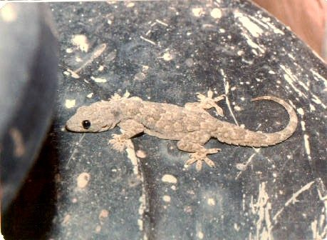

छिपकलीNorthern House Gecko
Hemidactylus flaviviridis · Gekkonidae · REP-0030

- Scientific name वैज्ञानिक नाम
- Hemidactylus flaviviridis Rüppell, 1835
- Family कुल
- Gekkonidae
- Hindi हिंदी
- छिपकली
- Local names स्थानीय नाम
- chhipkali, chipkali, house gecko, northern house gecko
- Status here यहाँ की स्थिति
- native
- Movement आवागमन
- Resident, here all year
- Known from कहाँ दर्ज
- Others have published records from the wider Awadh–Purvanchal plain, none yet from Basti–Ayodhya अवध–पूर्वांचल से दूसरों के प्रकाशित अभिलेख, बस्ती–अयोध्या से अभी नहीं
- IUCN IUCN
- LC
- Review समीक्षा
- audited and independently read
When to look कब देखें
Present all year. साल भर मौजूद।
Uses and possibilities उपयोग और संभावनाएँ
Drawn from the documented uses in the profile below, where each is labelled traditional, current or a research lead. All uses →
Tell it apart from इनसे अलग पहचानें
छिपकली / Northern House Gecko
Hemidactylus flaviviridis Rüppell, 1835 — Gekkonidae
छिपकली — पूर्वी उत्तर प्रदेश के गाँवों और घरों में पाई जाने वाली सबसे परिचित छिपकली। हल्का पीला या हरा-भूरा रंग, कभी-कभी पारदर्शी दिखाई देता है। पैरों की उंगलियों के नीचे सूक्ष्म रेशों की गद्दियों से दीवारों पर दौड़ सकती है। रात के समय बल्बों के पास आकर मच्छरों और पतंगों का शिकार करती है। रात की टिक-टिक आवाज़ इसकी पहचान है।
Quick Identification त्वरित पहचान
| Feature | Description |
|---|---|
| Form | Small, flattened body with distinct head; granular skin texture |
| Coloration | Pale yellowish, greenish-grey, or pale brown; pattern of darker spots or bands |
| Feet | Expanded toe pads (lamellae) with fine setae; clawed digits |
| Tail | Slender, tapers gradually; regenerable |
| Vocalisation | Loud, repetitive chik-chik-chik call; distinctive clicking sounds |
| Size | Small; 40–55 mm snout-vent length |
Field tip: Look for a small pale gecko crawling on walls near light fixtures at night. Listen for distinctive clicking or chirping calls. Found in nearly every village house and structure. The ability to climb vertically on smooth surfaces is diagnostic of geckos generally.
Morphology आकारिकी
Biometrics (northern India populations):
| Measurement | Range |
|---|---|
| Snout-vent length (SVL) | 40–55 mm |
| Tail length | 45–65 mm |
| Weight | 2–4 g |
Body: Small, moderately flattened, with head distinct from neck. Skin covered in fine granular scales; underlying coloration shows through.
Feet: The defining feature is the presence of widely-expanded digital pads underneath the toes, covered in microscopic hair-like structures (setae). These setae adhere to surfaces through van der Waals forces, enabling the gecko to climb smooth walls and glass.
Tail: Slender, tapered, nearly as long as or longer than snout-vent length. The tail detaches easily if seized by a predator (autotomy), wriggling independently to distract attackers. A shorter, darker regenerate replaces the lost tail.
Eyes: Large, with vertical elliptical pupils. Geckos lack movable eyelids; the eye is covered by a transparent spectacle scale, which the lizard cleans by licking.
Coloration: Pale yellowish, greenish-grey, or pale brown, highly variable. Pattern includes darker spots, bands, or reticulations. Some individuals show pale stripes or darker dorsal lines.
Behaviour & Ecology व्यवहार और पारिस्थितिकता
Nocturnal insectivore. Highly efficient predator of night-flying insects. Congregates around artificial light sources to hunt mosquitoes, houseflies, moths, and termites. Acts as a primary biological pest control agent in domestic environments. Solitary but may aggregate at profitable feeding sites. Males are territorial; defend areas around lights with vocal calls and aggressive displays. Females are cryptic, hiding in wall crevices for most of the day.
Life Cycle / Phenology जीवन चक्र
- Active season: Active from March to November. During winter (December–February), they seek shelter in deep wall cracks, behind electrical switchboards, or in attic spaces, becoming inactive.
- Mating: Mating occurs in spring (April–May). Males use loud territorial clicking calls to attract females and compete with rivals.
- Egg-laying: Females lay hard-shelled eggs in dry, dark crevices (behind picture frames, in cupboards, under roof tiles). Two eggs per clutch, typically.
- Hatching: Eggs hatch in 40–50 days. Hatchlings are minute, about 2 cm total length, fully independent.
- Sexual maturity: Reached in 6–8 months.
Host Plants or Prey आहार
Primary prey items:
- Mosquitoes (Culex, Anopheles) and other Diptera
- Houseflies, moths, and butterflies
- Small spiders and arthropods
- Winged termites during emergence flights
- Small beetles and crickets
Predators / Natural Enemies शत्रु
- Feral cats: Primary predator in homesteads
- Birds: House Crow and Common Myna snatch geckos from window sills
- Spiders: Large huntsman and orb-weaver spiders prey on young geckos
- Snakes: Common Cat Snake and small rat snakes hunt geckos in houses and gardens
Agricultural / Human Relevance कृषि प्रासंगिकता
Domestic pest control. By consuming large volumes of mosquitoes, flies, and agricultural pest moths, geckos directly reduce disease transmission and crop losses. Recognized in traditional Indian pest management.
Cultural significance. In Uttar Pradesh, associated with folk beliefs (Shakuna Shastra). The sound of the gecko's chirp during conversation is sometimes believed to validate truth. The falling of a gecko on different parts of the body is interpreted as an omen.
Protection status. Protected under the Wildlife (Protection) Act 1972. Listed as Schedule IV (animals of lesser importance in hunting but still legally protected).
Expected Locally स्थानीय रूप से अपेक्षित
Not a field record. Written from published accounts for eastern Uttar Pradesh. No confirmed local sighting yet — if you have seen it, that is what the atlas needs.
अभी तक स्थानीय पुष्टि नहीं। यह विवरण प्रकाशित स्रोतों से है, किसी अवलोकन से नहीं।
Expected in virtually every house, school, and village building across Basti district. Look for them at night near light fixtures where insects gather. The species is nocturnal and vocal; listen for distinctive chirping calls at night. Winter activity reduces and geckos seek shelter in wall crevices. The first local record should document location (house type, room), date, time, and calls heard or geckos observed. Send photographs, audio recordings of calls, or evidence with specific place name, GPS coordinates, and date to the atlas.
Distribution वितरण
Global range: Native to tropical and subtropical South Asia; widely introduced and established in tropical areas of the Americas, Africa, and the Pacific islands.
In India: Abundant throughout the mainland and islands, particularly in human habitations.
In Uttar Pradesh: Ubiquitous in all urban, suburban, and rural settlements.
In Basti district / eastern UP: Found in virtually every village home and agricultural structure.
Research Questions शोध प्रश्न
Anyone can investigate these | कोई भी इन प्रश्नों की जाँच कर सकता है
- Do house geckos capture more insects near white LED lights compared to yellow incandescent bulbs? / क्या घरेलू छिपकलियाँ सफेद एलईडी लाइटों के पास पीले बल्बों की तुलना में अधिक कीड़ों को पकड़ती हैं? — Count successful feeding strikes over 30 minutes.
- How does the frequency of gecko clicking calls vary with humidity and temperature? — Record calls on humid vs. dry nights.
- At what regeneration rate do lost tails re-grow? — Monitor a marked gecko with a regenerating tail.
- How many geckos share a single light source, and do they show territorial behavior? / एक ही बल्ब के पास कितनी छिपकलियाँ रहती हैं? — Map positions over a week.
- Where do geckos lay eggs in houses, and how often do they reuse the same site? — Search likely nesting sites.
Similar Species मिलती-जुलती प्रजातियाँ
| Species | How to tell apart | हिंदी |
|---|---|---|
| Brooke's House Gecko (Hemidactylus brookii) | Barked texture on skin; prominent tubercles; prefers outdoor trees and walls | ब्रुक की छिपकली — खुरदरी |
| Flat-tailed House Gecko (Hemidactylus platyurus) | Tail strongly flattened with serrated edges | चपटी-पूंछ छिपकली |
| Oriental Garden Lizard (Calotes versicolor) | Much larger; diurnal; movable eyelids; lives in bushes | गिरगिट — बड़ा, दिन में सक्रिय |
Field rule: A small, pale gecko with smooth skin and a high-pitched chik-chik-chik call, found on house walls at night, is a Northern House Gecko.
Taxonomy & Classification वर्गीकरण
Original description. Wilhelm Peter Eduard Simon Rüppell described this species in 1835 in Neue Wirbelthiere zu der Fauna von Abyssinien gehörig. The epithet flaviviridis refers to the yellowish-green coloration. Originally placed in Hemidactylus, maintained in the genus.
Subspecies. Monotypic — no subspecies are currently recognised, though some populations show color variation.
Family and order placement. Order Squamata, family Gekkonidae. Gekkonidae is one of the most diverse lizard families, characterized by vocal communication and adhesive toe pads.
Phylogenetic notes. Hemidactylus flaviviridis is part of the diverse Hemidactylus genus of house geckos. Genetic studies show it is closely related to other Indo-Asian house geckos.
IUCN status rationale. Least Concern (LC). Extremely widespread, abundant, and increasing with human urbanization. No conservation concerns.
Photo Gallery फोटो गैलरी
Photos needed आवश्यक फोटो
- [ ] Individual gecko on wall at night
- [ ] Close-up of underside of foot showing lamellae
- [ ] Multiple geckos near light source
- [ ] Vocalizing individual (if possible)
No photos yet — add field photos to media/species/northern_house_gecko/ and run node scripts/sync_photos.js.
References संदर्भ
- Rüppell, W.P.E.S. (1835). Neue Wirbelthiere zu der Fauna von Abyssinien gehörig. Frankfurt am Main.
- Smith, M.A. (1935). The Fauna of British India: Reptilia and Amphibia. Vol. 2 — Sauria. Taylor & Francis, London.
- Daniel, J.C. (2002). The Book of Indian Reptiles and Amphibians. Bombay Natural History Society, Mumbai.
- Russell, A.P. (1975). A contribution to the functional morphology of the foot of the Gekkonidae. Journal of Zoology, 176(4), 437–476.
- Zoological Survey of India (ZSI) — Reptile Fauna of Uttar Pradesh.
- GBIF Occurrence Data — Hemidactylus flaviviridis, Uttar Pradesh (2010–2025).
Source file: species/fauna/reptiles/northern_house_gecko.md